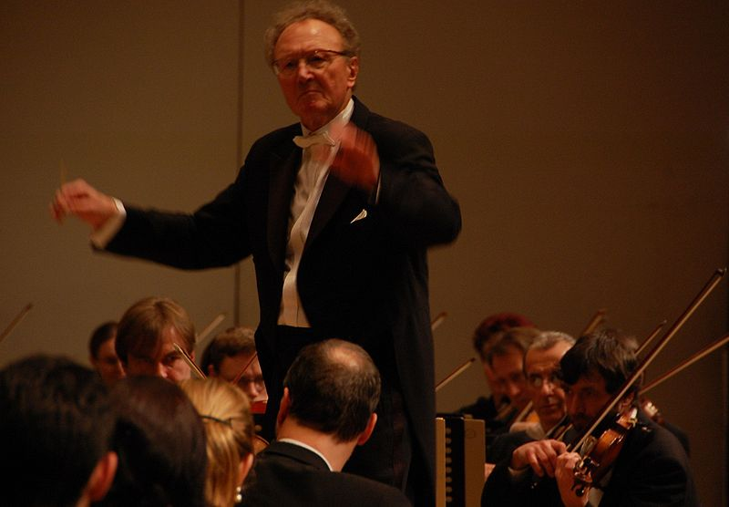
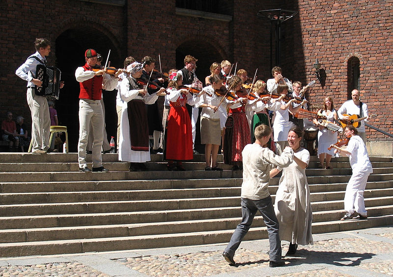
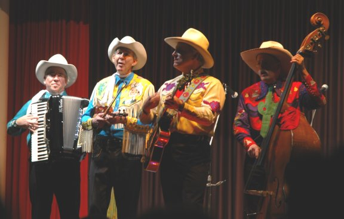
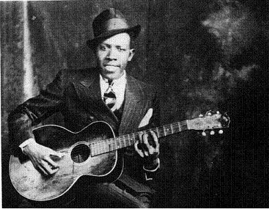
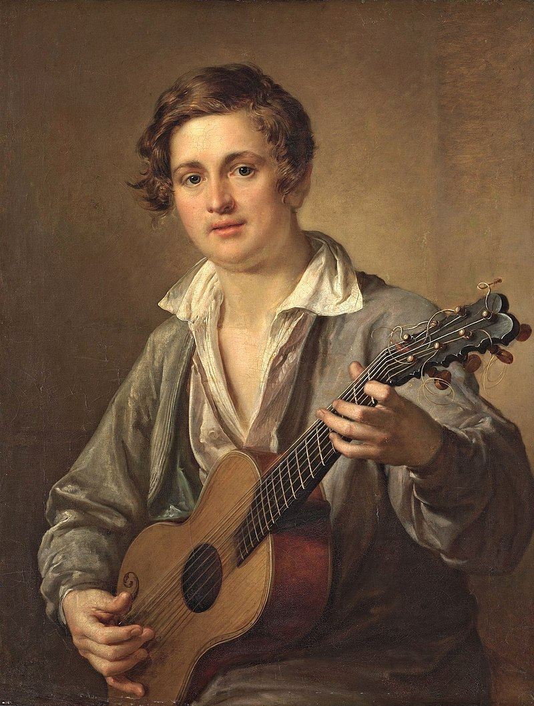
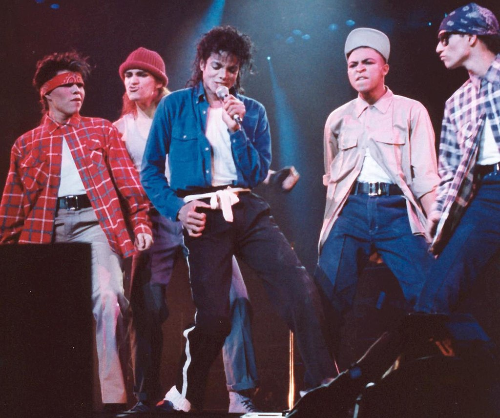

Народная музыка
Подробнее см. Народная музыка
Наро́дная му́зыка, музыка́льный фолькло́р — музыкально-поэтическое творчество народа, неотъемлемая частьнародного творчества (фольклора), существующего, как правило, в устной (бесписьменной) форме, передаваемого из поколения в поколение. Традиционная народная музыка, в основном создающаяся сельским населением, длительное время сохраняет относительную самостоятельность и в целом противостоит профессиональной музыке, принадлежащей более молодым, письменным традициям. Поскольку народная музыка известна всем общественно-историческим формациям (как устным, так и письменным), то её следует рассматривать не только как компонент народного творчества, но и, в более широком смысле, как ветвь (корень) музыкального искусства. Одна из главных ветвей, противопоставляемая музыке популярной и академической
Духовная музыка
Подробнее см. Духовная музыка
Духовная музыка — музыкальные произведения, связанные с текстами религиозного характера, предназначенные для исполнения во время церковной службы или в быту. Под духовной музыкой в узком смысле подразумевают церковную музыку христиан, а в широком смысле духовная музыка не исчерпывается сопровождением богослужения и не ограничивается христианством. Тексты сочинений духовной музыки могут быть как каноническими (например, католическая месса), так и свободными, написанными на основе или под влиянием священных книг (для христиан — Библии)
Академическая музыка
Подробнее см. Академическая музыка
Академическая музыка развилась из европейской музыки церковного пения. Христианская церковь, вместе с её философией и этикой, отбросила от себя практически все эмоции античных песен и плясок. Церковное пение было сосредоточено на себе самом и не связано с танцем, сценическим представлением, жестом — в противоположность комплексному состоянию музыки в народной культуре. «Музыкальная автономность» — важнейшее качество академической музыки. Следует отметить различие между типичным католическим и православным песнопениями. Западное христианское пение тяготело к высоким тембрам (дисканты, тенора) и светлому, нежному колориту. Русское же церковное пение отличалось басовым тембром, особую гордость в нём составляли басы-окта-висты. Однако при всём различии христианское пение сильно отличалось от мусульманской манеры, сохранявшей особого рода хриплые гортанные звуки.
Другая особенность академической музыки — она записана нотами. Российский музыковед-историк М. Сапонов писал: «Европейская музыкальная культура стала в полном смысле единственной письменной музыкальной культурой в мире, что и явилось одним из факторов универсальности и всемирной общезначимости художественных ценностей, созданных этой культурой. Письменный способ существования музыкальной традиции — это не просто альтернатива устному, он несёт в себе совершенно новую концепцию музыкального искусства, иные эстетические критерии, другую творческую психологию, свою слуховую настройку и связанные с письменностью методы музыкального обучения».
С конца XVII века в Европе начинают строиться первые концертные залы для исполнения музыкальных произведений. С окончанием эпохи Возрождения произошли фундаментальные перемены в мире музыки. Если в Средневековье христианская церковь отрезала от себя полную земных страстей музыку язычников, поставив пение целиком на службу Богу, то в Новое время в музыку вернулись переживания разнообразных земных человеческих эмоций.
Популярная музыка
Подробнее см. Популярная музыка
Популярная музыка (англ. popular music) — произведения различных музыкальных жанров, ориентированные на широкую публику.
Фолк-музыка
Подробнее см. Фолк-музыка
Фолк-музыка — популярная музыка, которая развилась на основе народной музыки в середине XX века в результате феномена фолк-ривайвлов, когда народная музыка начала распространяться среди массовой аудитории. В этой связи его иногда называют «музыкой фолк-ривайвла». Наиболее активно развитие жанра происходило в США и Великобритании. Фолк-музыка также включает в себя различные поджанры, в том числе фолк-рок и электрик-фолк.
В английском языке для отделения данного жанра от «настоящей» народной музыки, которую называют traditional folk music («традиционная народная музыка») может применяться термин contemporary folk music («современная народная музыка»). Несмотря на отличия «традиционной» и «современной» разновидностей, в английском языке они часто обозначаются единым термином folk music, исполняются одними артистами и в рамках общих для обоих направлений тематических музыкальных фестивалей.
- Этническая музыка
- Прогрессив-фолк
- Фолк-барок
- Филк
Кантри
Подробнее см. Кантри
Разновидность американской популярной музыки, развившаяся из традиционной музыки иммигрантов Британских островов. Изначально — сельский любительский жанр, смешавший кельтские и английские танцевальные мелодии с песнями XIX века, блюзом, госпелом и американской духовной музыкой, но с 1920-х годов развился в один из наиболее коммерчески успешных музыкальных жанров.
Поджанры
- Блюграсс
- Кантри-поп
- Альт-кантри
- Хонки-тонк
Латиноамериканская музыка
Подробнее см. Латиноамериканская музыка
Латиноамерика́нская му́зыка (исп. música latinoamericana) — обобщённое название музыкальных стилей и жанров стран Латинской Америки, а также музыка выходцев из этих стран, компактно проживающих на территории других государств и образующих большие латиноамериканские сообщества (например, в США). Является сплавом многих музыкальных культур, однако её основу составляют три компонента: испанская (либо португальская), африканская и индейская музыкальные культуры. Как правило, латиноамериканские песни исполняются на испанском или португальском языках, реже — на французском. В разговорной речи часто используется сокращённое название «латинская музыка», «латина» (исп. música latina).
- Бачата
- Зук
- Кубмия
- Ламбада
- Мамбо
- Меренге
- Пачанга
- Румба
- Сальса
- Самба
- Сон
- Танго
- Форро
- Ча-ча-ча
Блюз
Подробнее см. Блюз
Блюз (англ. blues от blue devils) — музыкальная форма и музыкальный жанр, зародившиеся в конце XIX века в афроамериканском сообществе Юго-востока США, в среде выходцев с плантаций «Хлопкового пояса». Является (наряду с рэгтаймом, ранним джазом, рэпом и др.) одним из наиболее влиятельных вкладов афроамериканцев в мировую музыкальную культуру, сложившимся из таких её проявлений, как «рабочая песня»[en], холер[en] (ритмичные вскрики, сопровождавшие работу в поле), выкрики в ритуалах африканских религиозных культов (англ. ринг-шаут[en]), спиричуэлс (христианские песнопения в особой манере), шант[en] и баллады (короткие стихотворные истории). Блюз во многом повлиял на современную популярную музыку, в особенности таких жанров как «поп», «джаз», «рок-н-ролл» «соул».
- Сельский блюз
- Харп-блюз
- Техасский-блюз
- Электрик-блюз
- Вест-сайд-блюз
- Вест-кост-блюз
- Дельта-блюз
- Чикагский-блюз
- Свомп-блюз
- Зайдеко
Ритм-н-блюз
Подробнее см. Ритм-н-блюз
Ритм-энд-блюз, или ритм-н-блюз (от англ. Rhythm & Blues, сокр. R&B) — стиль популярной музыки афроамериканцев, включающий элементы блюза. Изначально, обобщённое название массовой музыки, основанной на блюзовых и джазовых направлениях 1930—1940-х годов. В конце 1940-х годов словосочетание ритм-энд-блюз стало официальным маркетинговым термином для обозначения современных, с элементом танцевального ритма, популярных направлений в музыке афроамериканских исполнителей США.
- Ду-воп
- Соул
- Фанк
- Нью-джек-свинг
- Современный ритм-н-блюз
- Неосоул
Джаз
Подробнее см. Джаз
Джаз (англ. jazz) — форма музыкального искусства, возникшая в конце XIX — начале XX века в США в результате синтеза африканской и европейской культур и получившая впоследствии повсеместное распространение. Характерными чертами музыкального языка джаза изначально стали импровизация, полиритмия, основанная на синкопированных ритмах, и уникальный комплекс приёмов исполнения ритмической фактуры — свинг. Дальнейшее развитие джаза происходило за счёт освоения джазовыми музыкантами и композиторами новых ритмических и гармонических моделей.
Первый джаз-оркестр в Советской России был создан в Москве в 1922 г. поэтом, переводчиком, танцором, театральным деятелем Валентином Парнахом и носил название «Первый в РСФСР эксцентрический оркестр джаз-банд Валентина Парнаха»[10].
- Свинг
- Новоорлеанский или традиционный джаз
- Диксиленд
- Бибоп
- Биг-бэнд
- Буги-вуги
- Босса-нова
- Соул-джаз
- Джаз-фьюжн
- Джаз-фанк
- Джаз-фанк
- Ню-джаз
Шансон, романс, авторская песня
Подробнее по этой теме см. Шансон, Романс(музыка), Авторская песня
Шансо́н (фр. chanson — песня) — французская эстрадная песня в стиле кабаре.
Рома́нс (фр. romance) — многозначный музыкальный и литературный термин, в наиболее распространённом значении — небольшое музыкальное сочинение для голоса в сопровождении инструмента, написанное на стихи лирического содержания. В первой половине XIX века в России на волне веяний романтизма сформировался жанр русского романса. Ведущий вклад в его становление внесли композиторы Алябьев, Варламов и Гурилёв. Во многих романсах звучат цыганские темы. В продолжение XIX века сформировалось несколько поджанров:
- Классический романс — написанный профессиональными композиторами.
- Городской романс (бытовой, мещанский) — авторский по способу создания, но фольклорный по способу бытования, прототип русского шансона.
- Цыганский романс — жанр, сформировавшийся к середине XIX века на основе русских народных песен и бытовых романсов под влиянием хоров петербургских и московских цыган.
- Жестокий романс — особенностью которого являются яркость персонажей, контрастность чувств, мелодраматизм, острота ситуации, доходящая до крайности.
- Казачий романс — казачьи авторские песни, на казачью тематику, зародились на Дону. К «казачьим романсам» нередко ошибочно причисляется и написанный в Петербурге и впервые исполненный там же популярный романс 1840- х гг. Н. П. Девитте, аристократа голландского происхождения, на слова Андрея Молчанова — «Не для меня придёт весна…».
Блатная песня — песенный жанр, воспевающий тяжёлый быт и нравы уголовной среды; изначально ориентирован на заключённых и лиц, близких к преступному миру.
Авторская песня (бардовская песня) — песенный жанр, возникший в середине XX века в разных странах. Его отличительными особенностями являются совмещение в одном лице автора музыки, текста и исполнителя, гитарное сопровождение, приоритет значимости текста перед музыкой.
Электронная музыка
Подробнее см. Электронная музыка
Электро́нная му́зыка (нем. Elektronische Musik, англ. Electronic music, в просторечии также «электроника») — широкий музыкальный жанр[источник не указан 40 дней], обозначающий музыку, созданную с использованием электронных музыкальных инструментов и технологий (чаще всего при помощи специальных компьютерных программ). Хотя первые электронные инструменты появились ещё в начале XX века, электронная музыка как самостоятельный жанр утвердилась во второй половине XX века — начале XXI века и включает сегодня в свой обширный жанрово-стилевой спектр десятки разновидностей от экспериментальной академической музыки до популярной электронной танцевальной музыки. Электронная музыка оперирует звуками, которые образуются при использовании электронных технологий и электромеханических музыкальных инструментов. Примерами электромеханических музыкальных инструментов могут служить телармониум, орган Хаммонда и электрогитара. Чистый электронный звук получают с помощью таких инструментов, как терменвокс, синтезатор и компьютер.
- Индастриал
- Нойз
- EBM
- Нью-эйдж
- Эмбиент
- Синти-поп
- Электро
- Хаус
- Техно
- Дарквэйв
- Драм-н-бейс(Джангл)
- Даунтемпо
- Инди-электроника
- IDM
- Хардкор
- Транс
- Глитч
Рок
Подробнее см. Рок-музыка

Рок-музыка (англ. Rock music) — обобщающее название ряда направлений популярной музыки. Слово rock (в переводе с английского «качать», «укачивать», «качаться») в данном случае указывает на характерные для этих направлений ритмические ощущения, связанные с определённой формой движения, по аналогии с roll, twist, swing, shake… Такие признаки рок-музыки, как использование электромузыкальных инструментов, творческая самодостаточность (для рок-музыкантов характерно исполнение композиций собственного сочинения), являются вторичными и часто вводят в заблуждение. Истоки рок-музыки лежат в блюзе, из которого и вышли первые рок-жанры — рок-н-ролл и рокабилли, однако непосредственным предшественником рок-музыки был ритм-н-блюз.
Рок-музыка имеет самое большое количество направлений (около 180): от достаточно «лёгких», таких как танцевальный рок-н-ролл, поп-рок, мерсибит, до агрессивных — хэви-метала, глэм-метала, трэш-метала, блэк-метала и брутальных дэт-метала, грайндкора.
Первые поджанры рок-музыки возникали в тесной связи с народной и эстрадной музыкой того времени — в первую очередь это фолк, кантри, скиффл, мюзик-холл. За время существования рок-музыки её соединяли практически со всеми возможными видами музыки.
Часто рок-музыка противопоставляется поп-музыке и так называемой «попсе». Более определённо можно говорить о, так называемой, «музыкальной экспрессии», которая, в силу повышенной, в сравнении с иными видами музыки, динамики (громкости) исполнения (по разным источникам от 110 до 155 дБ), является особой для многих рок-стилей (направлений), поскольку даже звучание большого симфонического оркестра находится в пределах 85 дБ и редко доходит до 115 дБ. («конкуренцию» в плане громкости могут составить лишь направления музыки, использующие электроакустическое звучание)
Хип-хоп
Подробнее см. Хип-хоп
Возник Хип-Хоп в 1973 году благодаря ямайскому Диджей Кул Херк включая на местной вечеринке в Бронксе на 1520 Sendgwick Avenue, знаменитые тогда песни и микшировав их он создал один из наиболее известных направлений в музыке, но первые записи в этом стиле появились только спустя 6 лет в марте 1979 была записана первая хип-хоп песня King Tim III от группы The Fatback Band. Двумя годами ранее в ночь с 13 на 14 июля 1977 году произошло массовое отключение электроэнергии, что привело к разбою и кражам в разных районах Нью-Йорка, благодаря этому стечению обстоятельств большинство также считает основанием хип-хопа, т.к теперь зачастую афроамериканцы могли иметь у себя дорогостоящую аппаратуру для записи музыки и спустя несколько лет сначала наркоторговцы, а затем и лейблы заинтересовались новыми талантами из бедных районов, увидев в этом прибыль.
Поджанры хип-хопа:
- Альтернативный хип-хоп
- Чикано-рэп
- Фристайл-рэп
- Гангста-рэп
- Хардкор-рэп
- Трэп-рэп
- Мамбл-рэп
- Эмо-рэп
Регги
Подробнее см. Регги
Регги (рэгги, реггей; англ. reggae) — направление современной музыки, сформировавшееся на Ямайке в конце 1960-х и получившее широкое распространение с начала 1970-х годов. Главной особенностью регги является ведущая роль ритмических элементов, преимущественно бас-гитары, рисунок которой составляет основу композиции как ритмически, так и мелодически (партии остальных инструментов строятся вокруг партии баса). Также в регги отмечается: умеренный (может быть и быстрый, но не агрессивный) темп, размер — 4/4, акценты в аккомпанементе на 2-й и 4-й доле, брейки на высоких томах или тимбалах.
Поп-музыка
Подробнее см. Поп-музыка
Поп-музыка включает в себя, такие жанры, как:
- K-pop
- Электропоп
- J-pop
- Q-pop
- Диско
- Традиционная поп-музыка
Примечания
- И. И. Земцовский. Народная музыка. belcanto.ru (12.01.2011 в 15:03). Дата обращения: 6 декабря 2011. Архивировано 5 февраля 2012 года
-
Народная музыка..krugosvet.ru. Дата обращения: 6 декабря 2011. Архивировано 14
февраля 2012 года.
- Духовная музыка // Гондольера — Корсов. — М. : Советская энциклопедия : Советский композитор, 1974. — (Энциклопедии. Словари. Справочники : Музыкальная энциклопедия : [в 6 т.] / гл. ред. Ю.В. Келдыш ; 1973—1982, т. 2).
- Духовная музыка // Большой энциклопедический словарь
- Холопова В. Н. Музыка Европы // Журнал «Современная Европа», 2005
- Norman Abjorensen. Historical Dictionary of Popular Music . — Rowman & Littlefield, 2017-05-25. — 695 с. — ISBN 9781538102152.
- Ruehl, Kim Folk Music. About.com definition. Дата обращения: 18 августа 2011.
- Willi Apel. The Harvard Dictionary of Music . — Harvard University Press, 2003-11-28. — 1020 с. — ISBN 9780674011632.
- Michael Kennedy, Tim Rutherford-Johnson, Joyce Kennedy. The Oxford Dictionary of Music . — OUP Oxford, 2013-08-15. —
- Андрей Горохов. Музпросвет. М.: Ад Маргинем, 2003 г. ISBN 5-93321-059-5
- «Старая пластинка»
- industrial.onego.ru: Music reviews archive
- http://rwcdax.here.ru/indrus.htm
- allmusic (недоступная ссылка)
- AllMusic Guide Genre: Ambient (недоступная ссылка). by Sean Cooper
- Феофанов , 1978, с. 66—67.
- Зельдин, 1977, с. 51.
- Риман, 2008, с. 7.
- Платонов, 1987, с. 30.
Литература
- Зельдин Е. А. Децибелы. — М.: Энергия, 1977. — Т. 2.
- Платонов А. Н. «Энергетическая подзарядка» или подделки под рок. — М.: «КЖ» Молодая гвардия, 1987. — 34 с.
- Риман Г. Музыкальный словарь. — М.: ДиректМедиа Паблишинг, 2008.
- Феофанов О. А. Рок-музыка вчера и сегодня. Очерк. — М.: Детская литература, 1978. — 158 с.